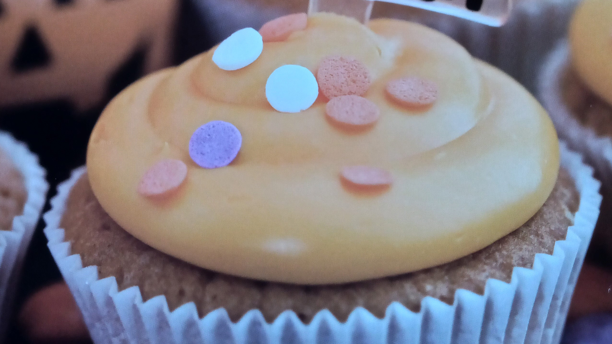
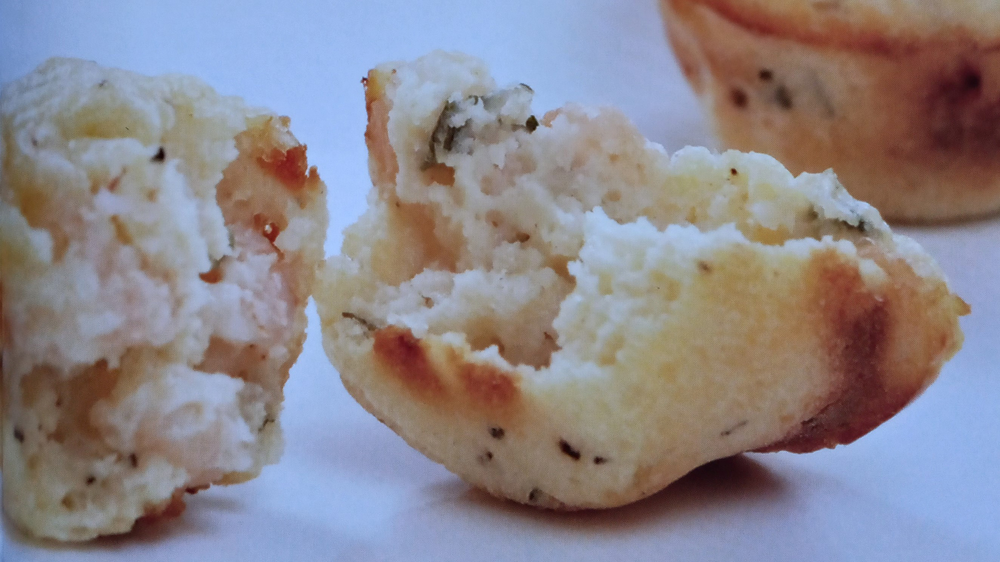
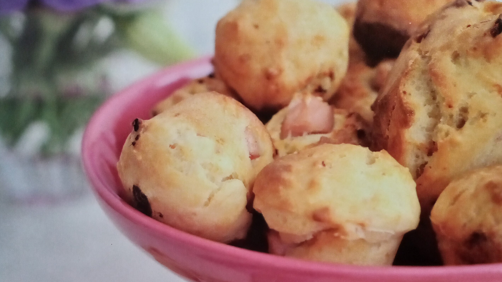

 Muffin • Dulce Feliz Halloween Unidades: 24 • Tiempo de Elaboración: 40 minutos • Dificultad: Baja
 Muffin • Salado Aperitivos de Gambas Unidades: 6 • Tiempo de Elaboración: 50 minutos • Dificultad: Baja
 Muffin • Salado Bacón y Queso Unidades: 12 • Tiempo de Elaboración: 50 minutos • Dificultad: Baja